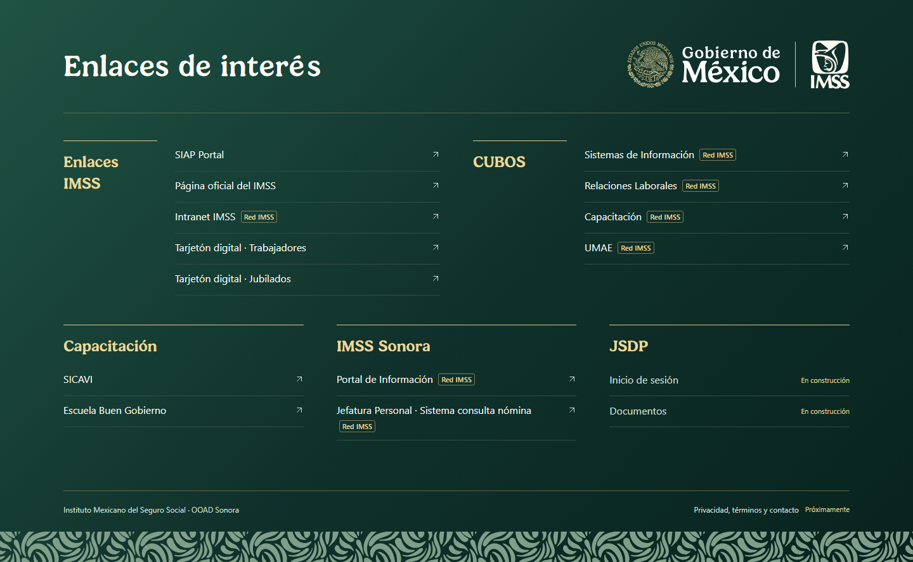
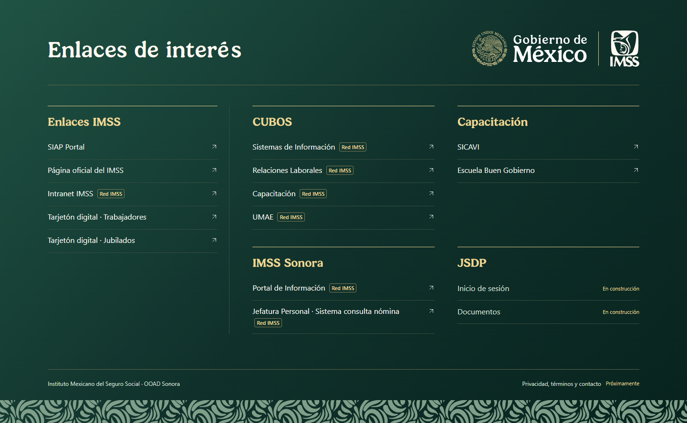
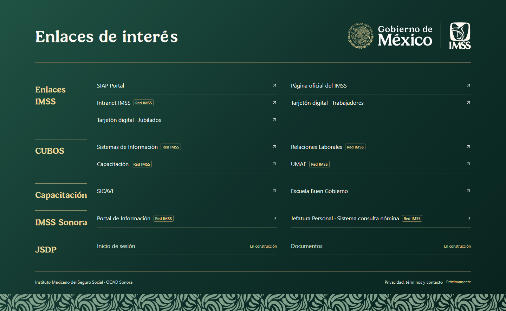

Tres acomodos con SIAP y CUBOS
Las tres propuestas incluyen SIAP Portal como primer enlace de IMSS y la nueva categoría CUBOS con Sistemas de Información, Relaciones Laborales, Capacitación y UMAE. En total: cinco categorías, trece enlaces activos y dos accesos en construcción.
Se conserva el estilo actual: degradado verde, textos claros y dorados, logotipos y franja ornamental transparente y animada.
Recomendación: O. Da un lugar principal a los dos grupos con más enlaces y mantiene juntas las tres categorías pequeñas.
O · Dos bloques principales y tres categorías
IMSS y CUBOS comparten la primera fila; Capacitación, IMSS Sonora y JSDP quedan en una segunda fila de tres columnas.

Imagen de escritorioImagen móvilAbrir maqueta adaptable y animada


P · Columna IMSS y cuatro bloques
IMSS ocupa una columna propia a la izquierda. A la derecha, CUBOS, Capacitación, IMSS Sonora y JSDP forman una cuadrícula de cuatro bloques.

Imagen de escritorioImagen móvilAbrir maqueta adaptable y animada


Q · Directorio en cinco filas
Una fila por categoría, con el nombre a la izquierda y los enlaces en dos columnas. Es la variante más cercana al lenguaje editorial de H.

Imagen de escritorioImagen móvilAbrir maqueta adaptable y animada